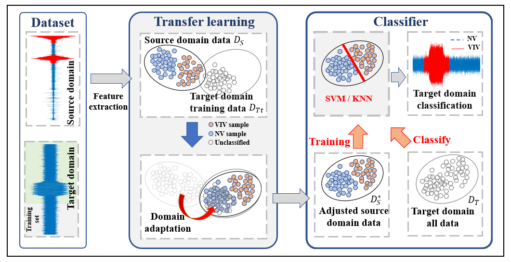
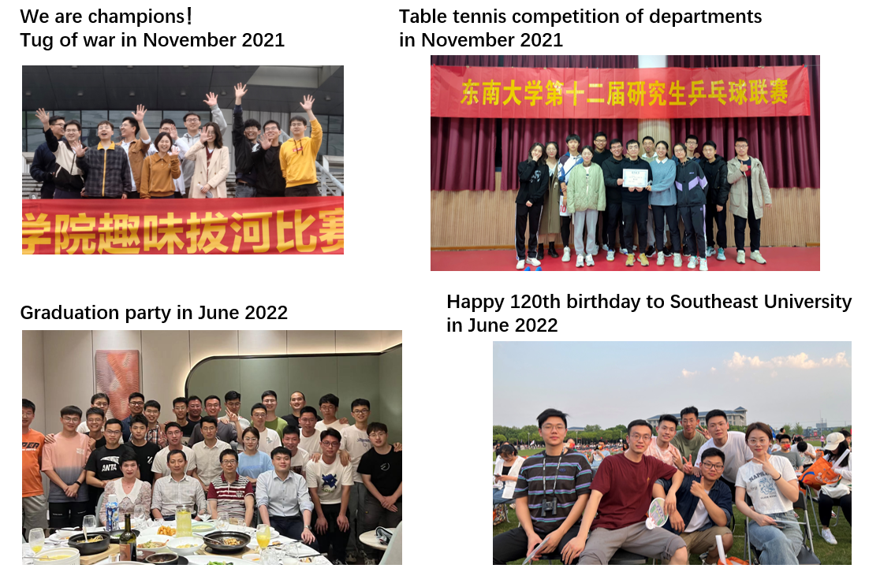

Jiale Hou 侯佳乐
Hi, welcome to my website! I'm Jiale Hou, an MS student majoring in civil engineering at
Southeast University(China).
At present, I am carrying out research on the application of machine learning in structural health monitoring under the guidance of
Prof. Chunfeng Wan
and Prof. Youliang Ding.
My research interests are: physics informed machine learning, transfer learning and structural health monitoring.
Education
2016 ~ 2020, Bachelor in civil engineering, GPA 85.0/100
Department of Civil Engineering, Xi'an University of Architecture and Technology(XAUAT), PRC
2020 ~ now, Master in structural engineering, GPA 88.6/100
Department of Civil Engineering, Southeast University, PRC
Research
1. Missing data imputation for structural health monitoring system

Sensors are the most important part of structural health monitoring systems (SHMSs), however they
will be abnormal sometimes due to their deterioration or environment effect,
which will result in data loss during the health monitoring process of the structures.
We developed a novel data imputation framework based on deep learning and data augmentation technique,
which enables the application of data modeling and missing data imputation based on the less
remaining data when multiple sensors fail. Data imputation can be made between the same type
of sensors (STSs) and also different types of sensors (DTSs). The proposed methods are verified on the dataset of a real concrete bridge
located in China, and results show that proposed method achieves good performance.Besides, we are now trying to use
Bayesian tensor learning to impute missing and abnormal data in SHMSs.
2. Automatic identification of vortex induced vibration of long span bridges

This study proposes an automatic vortex induced vibration (VIV) identification method using support vector machine (SVM)
and the transfer learning technique,
which can identify VIV in real-time or in the SHM historical dataset. It is worth noting that this
method does not need VIV data on the target dataset. The strong generalization ability and high
accuracy and efficiency of the proposed method are
verified on the SHM dataset of a long-span suspension bridge and simulated VIV acceleration data
of 2-DOF system.
3. Forced vibration of the modified Timoshenko beam theory

Since the Timoshenko beam was introduced to engineering fields, many efforts have been devoted and many problems are yet to handle.
Based on the classical Timoshenko beam theory, the rotary inertia caused by the shear deformation
is further considered and the dynamic response under forced vibration is derived. It is found that the effect of the shear deformation induced rotary inertia is small for
thin and slender beams; however, it is evident for short and deep beams with high stiffness. We believed that the proposed modified Timoshenko beam theory is a more reasonable, uncomplicated, and accurate
model to calculate the responses of the beam under forced vibration. We are trying to use the physical informed neural network (PINN) to solve the forced vibration response,
and further realize the inverse calculation of structural parameters from the monitoring data.
Projects
1.Research on bridge monitoring data cleaning and structural safety evaluation based on machine learning (SJCX21_0053), Postgraduate Research & Practice Innovation Program of Jiangsu Province, 2021. (Leading project, ongoing)
2.Adaptive early warning and digital modeling of vortex induced vibration of long-span cable bridges, Opening Foundation of Zhejiang Scientific Research Institute of Transport, 2022. (Leading project, ongoing)
3.Research on bridge monitoring data mining and modeling method based on Artificial Intelligence (KYCX21_0113), Postgraduate Research & Practice Innovation Program of Jiangsu Province, 2021. (Participating project, ongoing)
Publications
[1] J.L. Hou, H.C. Jiang, C.F. Wan*, L.T. Yi, S. Gao, Y.L. Ding, S.T. Xue*, Deep learning and data augmentation based data imputation for structural health monitoring system in multi-sensor damaged state, Measurement 196 (2022) 111206.
[Link]
[2] J.L. Hou, X.B. Xiong, E.S. Ge, C.F. Wan*, Y.L. Ding, S.T. Xue. Automatic identification of vortex induced vibration of long-span bridges using kernel mean matching method. Eighth World Conference on Structural Control and Monitoring, 2022. (In press)
[3] C.F. Wan*, J.L. Hou, S.T. Xue. Forced vibration of a novel beam model considering the shear deformation induced rotary inertia. (preparing submit to Mechanics of Advanced Materials and Structures)
[4] L.T. Yi, Y.L. Ding*, J.L. Hou, Z.X. Yue, H.W. Zhao. Structural health monitoring data cleaning based on Bayesian robust tensor learning. Structural Health Monitoring (under review)
Prizes
1. Second Scholarship for Graduates, Southeast University, 2021
2. Excellent Graduate Student, Southeast University, 2021
3. Special Prize Winner of 12th Mathematics Competition of Shaanxi Student, 2019
4. Outstanding Student Cadres Prize, Xi’an University of Architecture and Technology, 2018
5. Outstanding Student Prize, Xi’an University of Architecture and Technology, 2017
6. JZFZ Scholarship, Jizhun Fangzhong Co., Ltd, 2017
Others
Internship
Swivel Construction Monitoring of Huanshi South Road Bridge
Dongguan, Guangdong Province, April to June 2022

Extracurricular life
I love playing table tennis and have won the title of 'National Second Grade Sportsman' in my junior high school.
I have many hobbies, such as fitness, hip-hop music, and philosophy.

Jiale Hou
Welcome to my website!